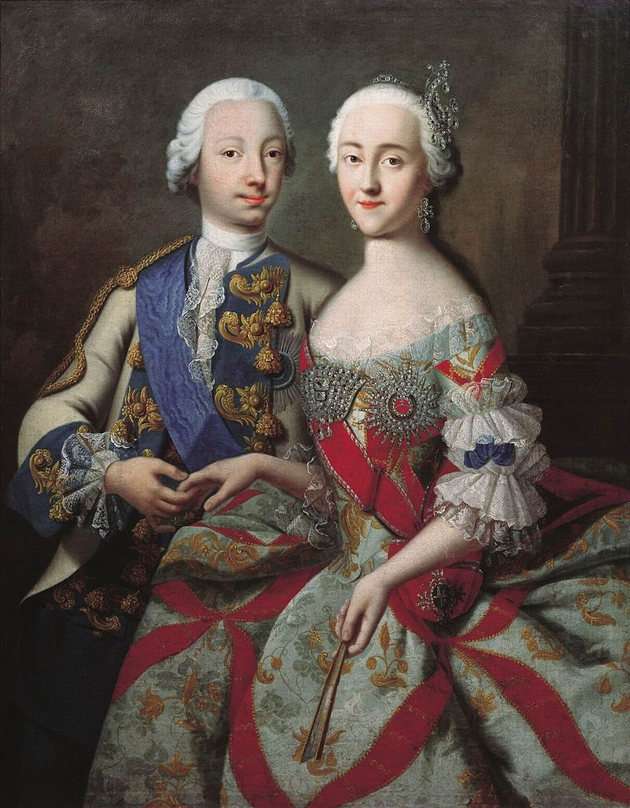

Catherine II was a monarch in Russia that ruled between 1762 and 1796.
After former Monarch of Russia Peter I died, there was a long struggle for who took the throne. Eventually, Peter III took control, and he married Catherine, who was a German Princess, as well as her second cousin. She became known for her talent at dueling, because it was what occupied much of her time as a child. In 1762, Peter III was assassinated. It is believed that Catherine had a role in the assassination, though nothing could be proved. Because of his death, however, Catherine took the throne and went on to become the longest lasting female Russian monarch. She mainly stayed in power by giving the upper class benefits and crushing the lower class. She did this by creating things like education programs for the upper class children to gain their favor, and then using her total power over military to crush any riots made by the lower class. Some other notable achievements include strengthening the economy and military. In fact, during her reign, she extended Russian lands by about 200K square miles. She also finished conquering the South, making Russia the dominant South-Eastern European power. She made no significant advancements in technology, but she is well known for contributing to the arts. The Hermitage Museum, which is a very popular art museum in Russia, started as Catherine's personal collection. She was also known fore reading many books and sponsoring many of their authors. At tyhe time of her ruling, although she supported Christianity, Religion was not considered extremely important.
Click on a year to view what happened.
Catherine II is born.
Catherine II dies.
Catherine II marries Peter III.
Peter III takes the throne.
Peter III is assassinated, Catherine II takes the throne.
Peter I dies without naming a successor, starting a long power struggle.
Peter III, Catherine's future husband, is born.
Catherine II participates in the 1st partitioning of poland, in which she met up with two other leaders to disscuss how to divide poland once it was conquered.
Catherine II has a son, named Paul I.
Catherine II became pregnant with a second child, named Anna. Anna only lived for 14 months.
Empress Elizabeth begins her reign over Russia.
(Young catherine on a horse.)
"I praise loudly. I blame softly." -Catherine II
"Her Majesty has a masculine force of mind, obstinacy in adhering to a plan, and intrepidity in the execution of it; but she wants the more manly virtues of deliberation, forbearance in prosperity and accuracy of judgment, while she possesses in a high degree the weaknesses vulgarly attributed to her sex-love of flattery, and its inseparable companion, vanity; an inattention to unpleasant but salutary advice; and a propensity to voluptuousness which leads to excesses that would debase a female character in any sphere of life." - James Harris, 1st Earl of Malmesbury
(Catherine II in a military uniform, displaying her "masculine force of mind" as James Harris called it.)
Empress
Ruthless, Determined
Ruling, Warring, Praising
She wants, she kills
Catherine
(One of the very few pictures of Catherine with Peter III before he was killed.)